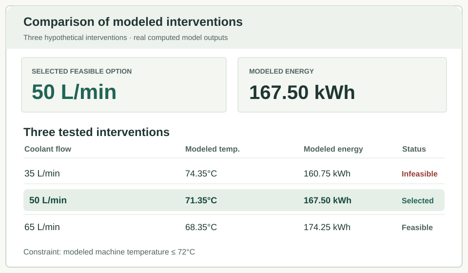
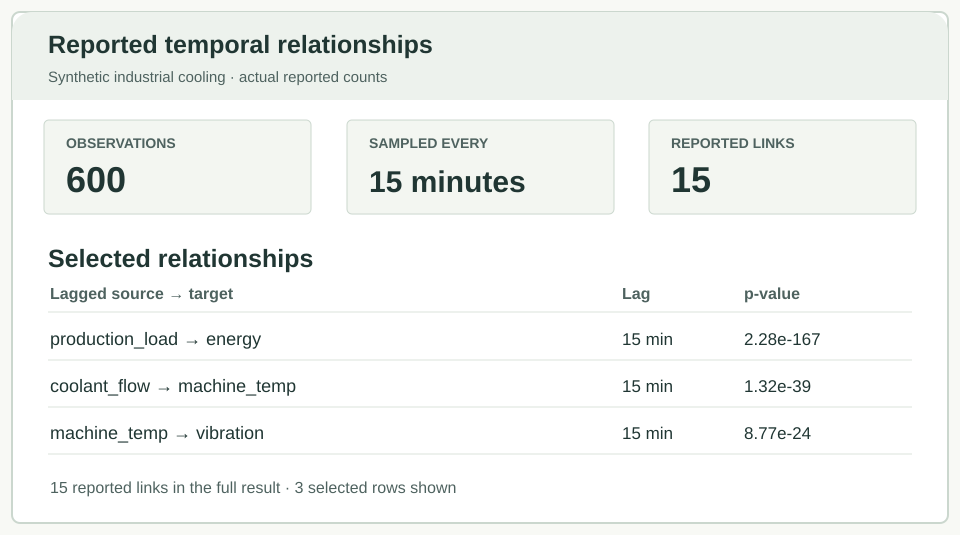

EXAMPLE USAGE / INDUSTRIAL COOLING
From data to
better decisions.
A real mira-powered ChatGPT research run. Explore relationships in industrial data, then compare modeled interventions against a temperature limit.

01 / ANALYZE
Find meaningful
relationships.
Six industrial signals, 600 observations, and 15 statistically reported time-lagged relationships.

What influences what?
Production load, cooling flow and machine temperature show measurable temporal dependencies. These are statistical findings, not automatically proven intervention effects.
What comes next?
Specify the decision model and the assumptions to test possible actions.
02 / EVALUATE
Not every low-cost action
is feasible.
Three synthetic cooling-flow settings were evaluated against the same modeled temperature limit.

The lowest-energy feasible choice under the supplied model.
03 / VERIFY
See how the decision
was calculated.
Inputs, equations, interventions and constraint checks stay inspectable.

Two separate operations. Relationships were analyzed from the synthetic dataset. The intervention comparison used a separately supplied hypothetical causal model. Its coefficients were not estimated from the dataset, and this is not a validated operating recommendation.
More evidence, fewer claims.
See the separate ChatGPT comparison and its full scored synthetic test.